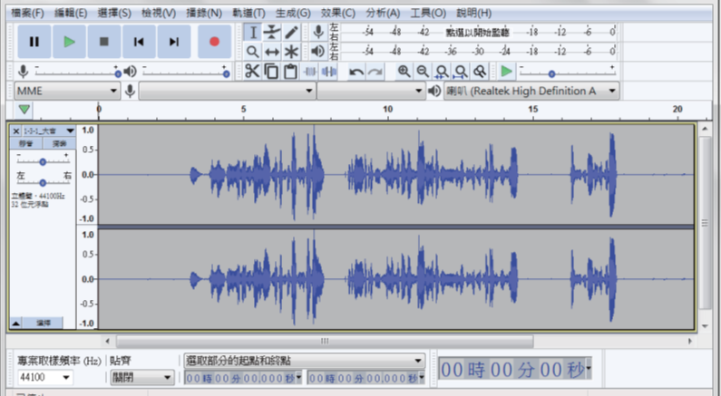
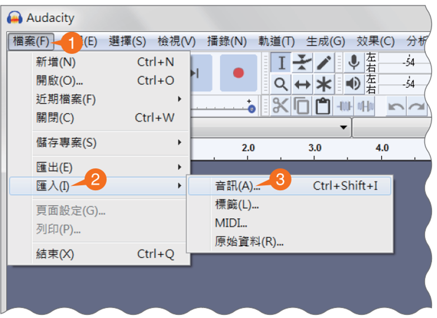
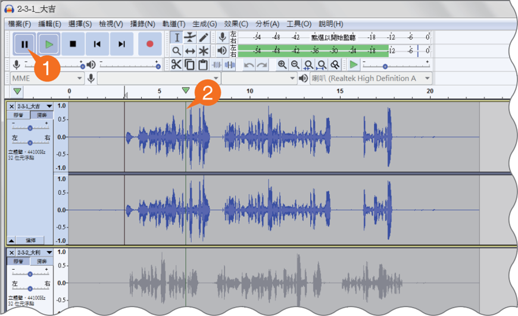
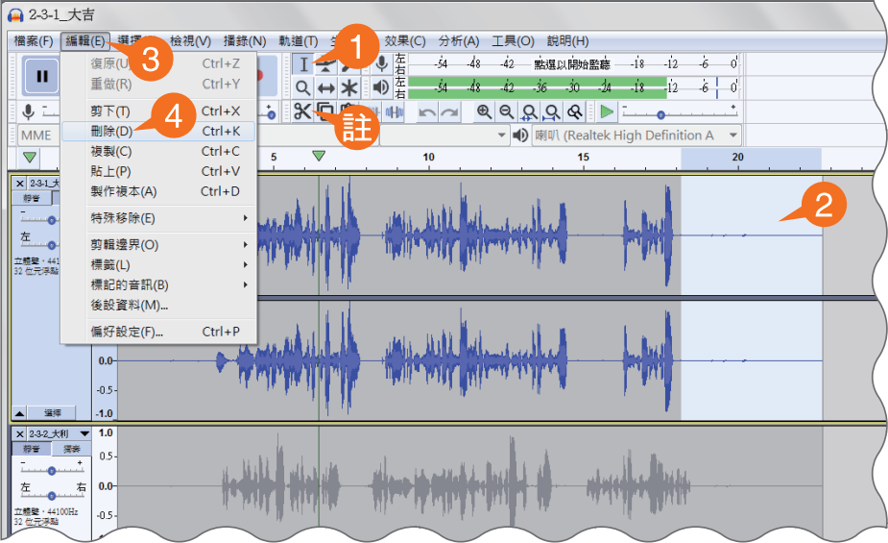
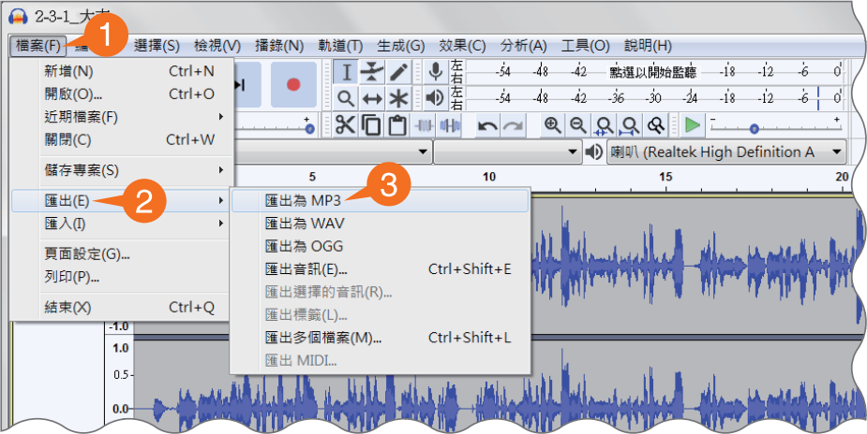

1. 聲音的響度主要對應？
單元三：音訊數位化
聲音是物理波動，電腦將其轉換成 0 與 1 的過程。
LEARNING GOALS
完成這一單元，你可以……
- 01 用振幅、頻率與音色描述聲音。
- 02 說明聲音取樣與量化的步驟。
- 03 比較 WAV、MP3 與 MIDI 的特性。
觀察提示： 改變滑桿時，先看波形的高低與密度如何改變，再連結到你聽見的聲音。
模擬物理特徵
定義：指聲音的強弱，與振幅有關。波形圖的上下起伏越大 (振幅大)，響度就越強。
定義：指聲音的高低，與頻率有關。波形圖越密集代表頻率越高。
💡 人耳聽覺範圍大約落在 20Hz ~ 20,000Hz 之間。
定義：指聲音的特色，與波形有關。波形不同，才能分辨不同樂器的聲音。
物理示波器 (類比聲波形態)
閉上眼睛，感受當音調和響度變化時，你的大腦如何快速辨識出不同的聲音。
取樣與量化參數
點越多，連出來的鋸齒就越平滑。
量化的 Bit 數（刻度）越多，越能抓住微弱的聲音層次，刺耳的雜音就會消失。
量化的 Bit 數（刻度）越多，越能抓住微弱的聲音層次，刺耳的雜音就會消失。
類比與數位對比
Binary Encoding (編碼流)
001 011 110 111 110 011 001
常見聲音格式比較
🎵 同一首音樂格式試聽體驗
目前模擬：WAV 格式（無損原音，音質飽滿）
聲音檔案大小計算機
以 CD 音質（44.1kHz、16bits、雙聲道）為標準試算。
老實的 WAV 容量
10.1 MB壓縮後 MP3
0.9 MB消失的 200 億美金與版權
MP3 技術讓音樂複製極度廉價。1999 年至 2014 年間，實體音樂產值縮水了 200 億美金。我們更應思考如何利用法律與訂閱模式守護創意的價值。
🌧️ 聲音情境體驗
大家都聽過〈下雨的聲音〉，聲音不只是聽見，更能看見。它能帶我們走進不同場景，感受空間氛圍，喚起想像與記憶。
本課程將透過音效與情境聲音的探索，引導學習者用耳朵觀察世界。
▶️ 聽音辨位：場景盲測
System Standby
聲音數位化
💡 常見的數位剪輯軟體中，聲音是由無數個密集的取樣點與不同的振幅高度繪製而成的波形圖。
🎧 聲音情境創作坊：Audacity 混音實作指南
Step 0
Audacity 介面說明

🔍 點擊看大圖
Step 1
挑選並下載喜歡的音效
準備好你的混音素材！請前往以下素材庫，挑選並下載 最少三個 音效檔案。
Step 2
匯入三個音效

🔍 點擊看大圖
Step 3
播放與暫停

🔍 點擊看大圖
Step 4
編輯聲音

🔍 點擊看大圖
Step 5
匯出聲音檔

🔍 點擊看大圖
WRAP-UP
課後回顧：把連續聲音變成數位資料。
我能區分：響度、音高與音色分別對應什麼特徵。
我能說明：取樣率與位元深度各影響什麼。
我能選擇：依情境挑選合適的聲音格式。
快速檢核
答對三題，取得本單元徽章。
2. 取樣點變少時，常見結果是？
3. 想節省音訊容量可優先選？
從三題中找出你最需要再練習的概念。
PAIR TALK
同伴討論挑戰
要把一段訪談上傳到網路，你會優先採用哪種格式？
選擇後，和同伴用「我選……因為……」說明你的理由。